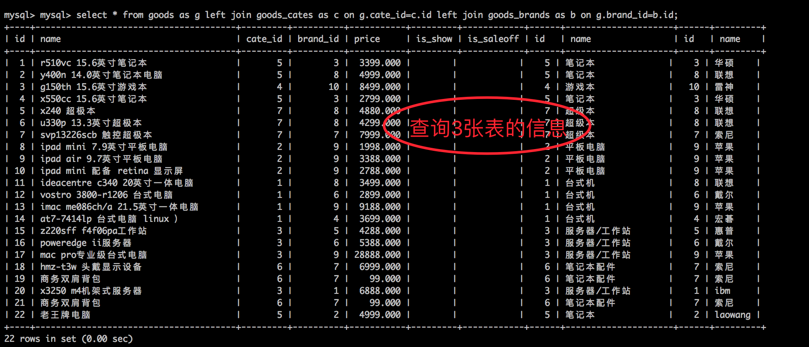
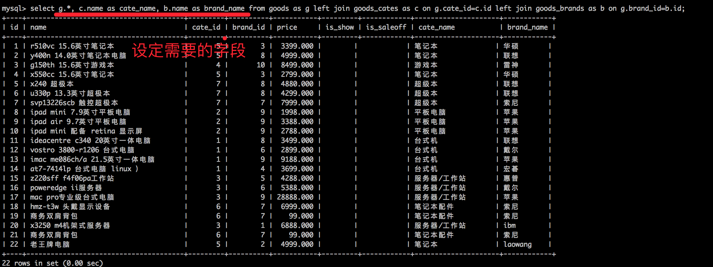
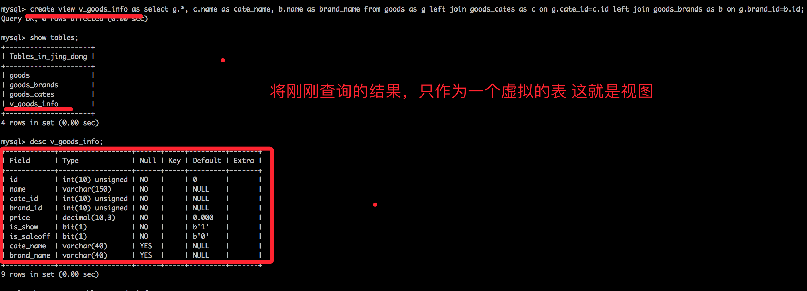
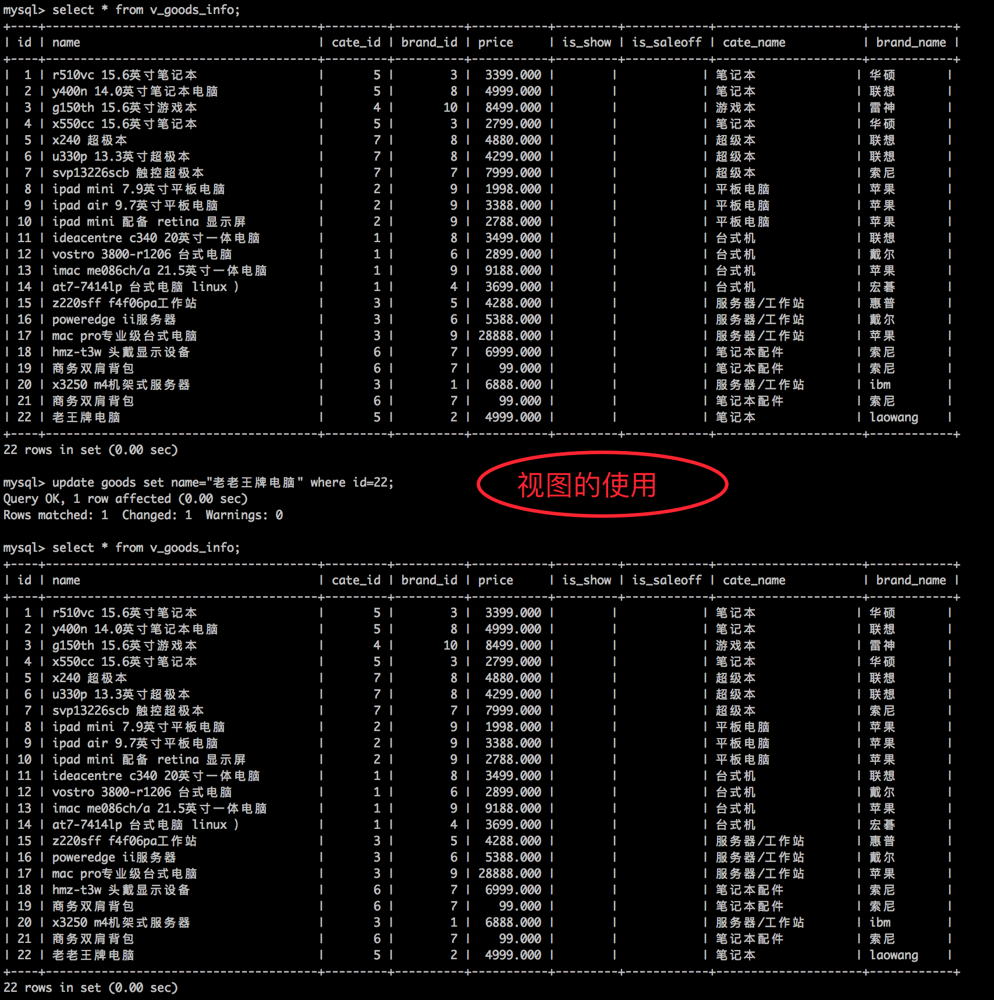

视图
1. 问题
对于复杂的查询，往往是有多个数据表进行关联查询而得到，如果数据库因为需求等原因发生了改变，为了保证查询出来的数据与之前相同，则需要在多个地方进行修改，维护起来非常麻烦
解决办法：定义视图
2. 视图是什么
通俗的讲，视图就是一条SELECT语句执行后返回的结果集。所以我们在创建视图的时候，主要的工作就落在创建这条SQL查询语句上。
视图是对若干张基本表的引用，一张虚表，查询语句执行的结果，不存储具体的数据（基本表数据发生了改变，视图也会跟着改变）；
方便操作，特别是查询操作，减少复杂的SQL语句，增强可读性；
3. 定义视图
建议以v_开头
create view 视图名称 as select语句;
4. 查看视图
查看表会将所有的视图也列出来
show tables;
5. 使用视图
视图的用途就是查询
select * from v_stu_score;
6. 删除视图
drop view 视图名称;
例：
drop view v_stu_sco;
7. 视图demo
   
8. 视图的作用
- 提高了重用性，就像一个函数
- 对数据库重构，却不影响程序的运行
- 提高了安全性能，可以对不同的用户
- 让数据更加清晰